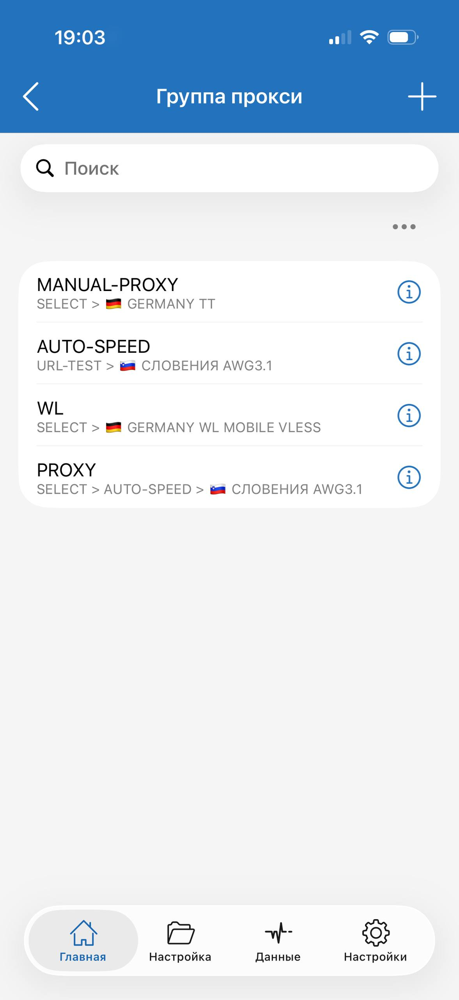
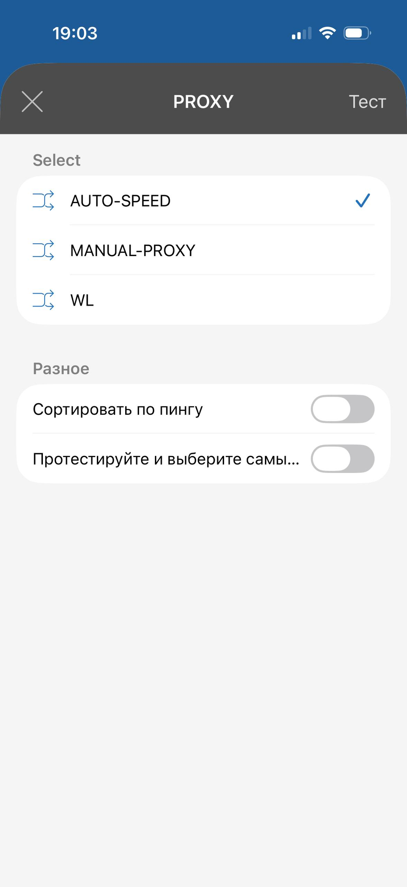
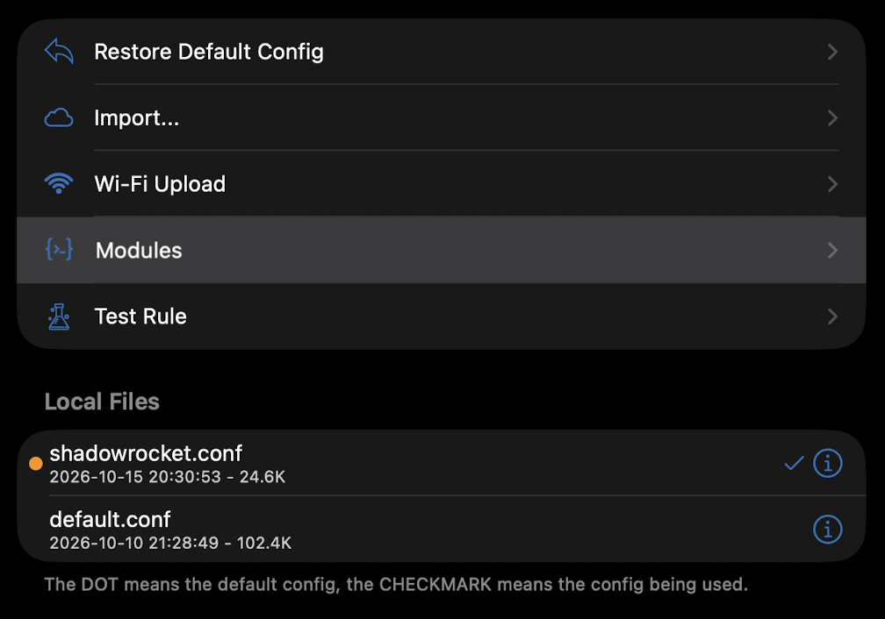

MotivatoPotato
Shadowrocket
Добавить в ShadowrocketКак работает конфиг
Российские домены и IP — напрямую. Остальные соединения — через выбранную группу PROXY. Отдельные правила задают исключения и блокировку.
Конфиг задаёт маршруты, а серверы добавляются отдельно — своей подпиской. После импорта выбери конфиг и установи глобальную маршрутизацию «Конфигурация».
Правила и исключения на GitHub ↗
Три группы и один селектор
PROXY — главный переключатель: в нём выбирается одна из трёх групп.
- AUTO-SPEED — включил и забыл. Автоматически тестирует серверы и выбирает быстрый доступный. Вручную переключать узлы для обычной работы не нужно.
- WL — если остальные серверы не работают. Выбери WL в PROXY, затем нужный сервер внутри WL.
- MANUAL-PROXY — если нужна конкретная страна или сервер. Выбери сервер внутри этой группы, затем MANUAL-PROXY в PROXY.

Обычный режим: PROXY → AUTO-SPEED. Выбери один раз после добавления конфига — дальше выбор сервера работает автоматически.

Модули
01DNS overrideПриватный DNS и Smart DNS задаются при установке.Добавить 02Gemini через Smart DNSДоступ к Gemini в связке с DNS override.Добавить 03OpenAI через СШАChatGPT, Codex и Dots через авто-выбор серверов USA.Добавить 04Блокировка рекламыПодключает списки блокировки рекламы.Добавить 05Twitch Video DirectНаправляет видеопотоки Twitch напрямую.Добавить 06GeForce NOWНаправляет соединения NVIDIA / GFN напрямую.ДобавитьПорядок и настройки модулей
Модули применяются в порядке расположения: верхние имеют приоритет. В Config → Modules переставь их по номерам кнопок 01–06. DNS override должен быть самым верхним.
Эти два модуля работают в связке. Сначала добавь DNS override (01): открой редактор текста модуля. После direct-dns-server = впиши адрес Smart DNS, который поддерживает доступ к Gemini, и только затем включи модуль. После dns-server = можно вписать свой приватный DNS вместо 9.9.9.9. Для direct-dns-server нужен именно Smart DNS. Резервный DNS остаётся из конфига. Персональные адреса вписывай в локальную копию; при повторном импорте проверь их.

OpenAI USA автоматически тестирует узлы с USA в названии из всех подписок и выбирает сервер. Проверка — каждые 180 секунд. Для обновления модуля используй его публичный URL в Shadowrocket. Стабильность Dots зависит от доступных серверов.
Затем включи Gemini через Smart DNS (02). Этот модуль направляет запросы Gemini напрямую, чтобы соединение использовало адреса, полученные через Smart DNS из предыдущего модуля. Он также задаёт маршруты для других сервисов Google AI и googleapis.com.
INCY
Основной профиль Обратный профиль · RU-VPNЧем отличаются профили
Основной: российские ресурсы — мимо VPN, остальной мир — через VPN. Есть отдельные исключения и блокировка.
Обратный: для подключения из-за рубежа. Российские сайты — через сервер с российским выходным IP, остальной мир — напрямую.
Кнопки передают маршрут в INCY для добавления и активации. Подробнее на GitHub ↗
Это настройки маршрутизации, а не готовый VPN. Серверы и подписка добавляются отдельно.
Подписка и Smart DNS
Smart DNS для DNS override я беру в этом сервисе. Названия и фильтры прокси-групп настроены под обозначения узлов в его подписке. Конфиг работает и с другими подписками, если имена серверов соответствуют фильтрам групп.
Сервис в Telegram Сервис в браузереРеферальные ссылки — переход поддерживает автора страницы.
Проверить подключение
2ip.io Яндекс ИнтернетометрДля основного профиля при подключении из России: Интернетометр показывает Россию, а 2ip.io — страну выбранного VPN-сервера. Так можно проверить разделение маршрутов.